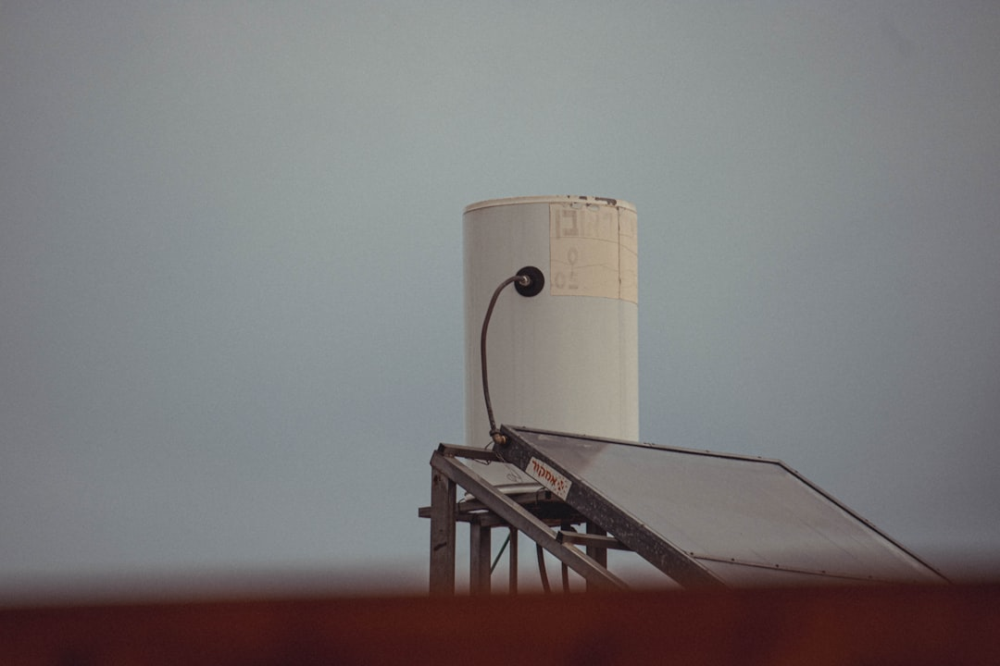

Flexiheat UK supplies indirect vented hot water cylinders designed for domestic, commercial and industrial hot water heating systems. An indirect vented hot water cylinder provides a practical method of storing and heating domestic hot water using an external heat source. Rather than relying entirely on an electric immersion heater, indirect vented hot water cylinders use a heat exchanger coil connected to a boiler, heat pump, solar thermal system or another suitable heat source. This arrangement combines hot water storage with a traditional open vented system that can provide dependable hot water for many types of UK properties.
The available Flexiheat UK capacities also make it possible to specify indirect vented hot water cylinders for requirements beyond standard houses. Larger homes with multiple bathrooms, properties with unusually high hot water demand and commercial or industrial buildings can select from higher-capacity cylinders and larger heat exchanger configurations. The range extends to 1,500 litres, with parallel arrangements available where even greater storage capacity is needed.
The Flexiheat UK stainless steel vented indirect hot water cylinder range has a maximum working pressure of 6 bar for the cylinder, equivalent to approximately 60 metres of static head. The stainless steel cylinder has a maximum operating temperature of 95°C. These pressure capabilities make the indirect vented cylinder range suitable for installations where there can be a significant vertical distance between the cold water storage cistern and the cylinder, including installations in basements of taller properties.
For older properties that already use copper cylinders, replacing the existing unit with a duplex stainless steel vented indirect hot water cylinder can retain the gravity-fed operating principle while introducing modern cylinder construction and insulation.
A vented indirect hot water tank does, however, have different characteristics from an unvented cylinder. Because hot water pressure is created by gravity, available pressure depends on the static head between the cold water cistern and the outlets. Properties requiring higher-pressure showers may therefore require a suitable booster pump. The cold water storage tank also requires adequate protection against low temperatures because freezing within a loft tank can affect the operation of the hot water system.
The Flexiheat UK stainless steel indirect vented hot water cylinder range is rated for a maximum working pressure of 6 bar. This is equivalent to approximately 60 metres of static head, providing considerable flexibility when positioning an indirect vented cylinder within a property. For example, the pressure rating can allow suitable cylinders to be positioned in basement areas of taller buildings where there is a substantial vertical distance between the cold water storage cistern and the cylinder.

An indirect vented cylinder with immersion can provide additional backup and top-up heating flexibility, while capacities extending from 140 litres to 1,500 litres allow the stored water volume to be matched to the application.
The vent pipe itself performs an important function within the system. As water heats, it expands. The open vent arrangement prevents pressure from building within the cylinder in the same way that it would in a completely sealed vessel. This fundamental design difference is why vented and unvented hot water cylinders require different installation arrangements.
For properties requiring more heat transfer capacity, Flexiheat UK offers its DSXL extra-large coil indirect vented hot water cylinders. These models have a 28 mm heat exchanger coil and are intended for homes with higher domestic hot water demand as well as commercial hot water heating applications.
Stainless steel also provides corrosion resistance and durability, making stainless steel vented indirect hot water cylinders a strong option for long-term domestic hot water storage. Combined with high insulation levels and a suitable heat exchanger, a modern stainless steel indirect vented cylinder can update an existing traditional hot water system without requiring the property to change to an unvented configuration.
Vented systems can also be less expensive than comparable unvented arrangements. The cylinder itself and the associated installation can be simpler, particularly when replacing an existing vented indirect hot water cylinder without substantially changing the property's plumbing system.
For homeowners replacing an older copper cylinder, a stainless steel vented indirect hot water cylinder can provide a modern alternative while retaining the established gravity-fed system. Duplex stainless steel offers higher pressure capabilities than the copper cylinders described by Flexiheat UK, where typical copper cylinder working heads range from approximately 10 to 25 metres depending on cylinder capacity and copper grade.

Another option available from Flexiheat UK is the twin coil indirect vented hot water cylinder. Twin coil cylinders are designed for installations where two heat sources need to supply heat to the same stored domestic hot water system. Each heat source can operate through an appropriate coil within the vented indirect cylinder.
For properties with greater domestic hot water requirements, Flexiheat UK also offers extra-large coil indirect vented hot water cylinders. The DSXL extra-large coil range uses a 28 mm heat exchanger coil and is intended for domestic properties with higher domestic hot water demand as well as commercial water heating applications. A larger heat exchanger can transfer more energy where the heating system and application require increased performance.
Flexiheat UK's standard coil range has a larger heat exchanger surface area than the competitor example provided by the company. A 300-litre Flexiheat UK indirect vented hot water cylinder provides a stated output of 25 kW at the specified boiler flow and return temperatures, compared with a stated 20 kW competitor example. Across the applicable 22 mm and 28 mm standard coil range, Flexiheat UK states that its heating power output is approximately 25% greater than the comparison units.
Heat exchanger performance has a direct influence on how effectively an indirect vented hot water cylinder transfers energy from the external heat source into the stored domestic hot water. Flexiheat UK uses larger heat exchanger surface areas across its standard coil range. For example, the 300-litre indirect vented cylinder has a stated 25 kW output at the specified boiler flow and return temperatures. This is approximately 25% greater heating power output than the comparison described across the Flexiheat UK 22 mm and 28 mm standard coil range.
The loft cold water storage cistern also forms an essential part of the system. It requires sufficient installation space and suitable protection against freezing during cold weather. If water in the storage cistern or associated pipework freezes, the performance of the indirect vented hot water system can be affected.
When considering the best indirect vented hot water cylinders for UK homes, existing system compatibility should be assessed first. A property already equipped with a loft cold water storage tank and open vent arrangement can often be well suited to an indirect vented hot water cylinder. Older and traditional properties in particular may benefit from maintaining this established system design rather than moving to a mains-pressure arrangement.

The 200 to 500 litre indirect vented hot water cylinder models achieve an ErP energy efficiency rating of Class A. These insulation levels help reduce energy consumption associated with maintaining the temperature of the stored domestic hot water. For households comparing the best indirect vented hot water cylinders for UK homes, cylinder insulation, storage capacity, heat exchanger performance and compatibility with the existing heating system should all form part of the selection process.
An indirect vented hot water tank remains a practical choice for many UK heating systems because of its straightforward operating principle. Cold water is gravity-fed from the storage cistern, an external heat source transfers energy through the indirect coil, heated water is stored within the cylinder, and the open vent arrangement accommodates expansion. The result is a conventional and well-understood method of supplying stored domestic hot water.
Insulation is another important consideration when comparing indirect vented hot water cylinders. Once water has been heated, reducing standing heat loss helps maintain the stored temperature and reduces unnecessary reheating. Flexiheat UK vented indirect cylinders are supplied with factory-fitted polyurethane foam insulation designed to provide low heat loss.